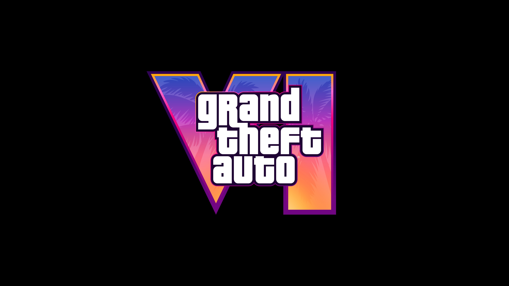
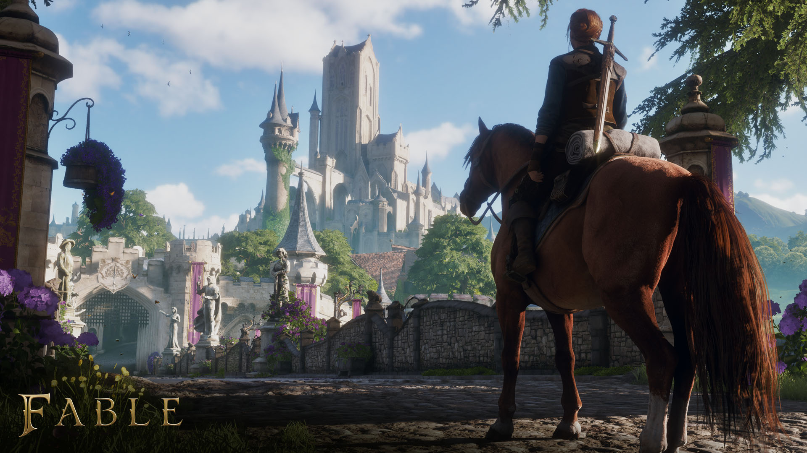
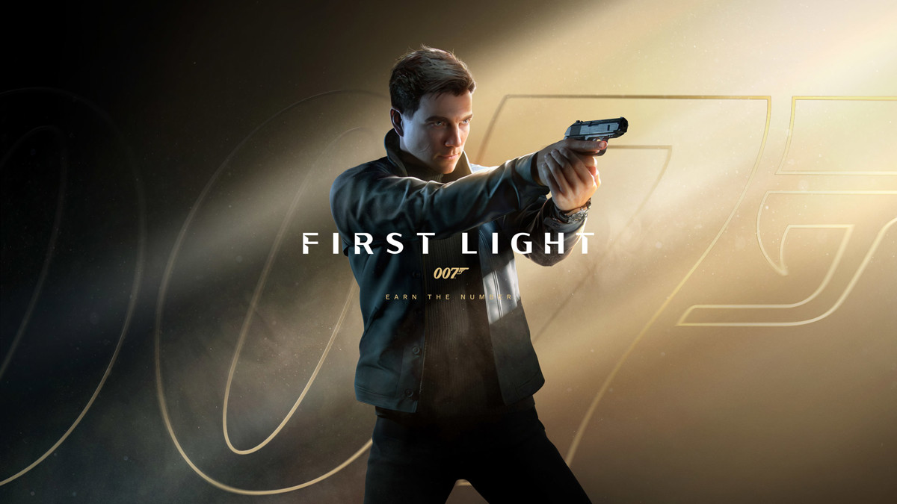
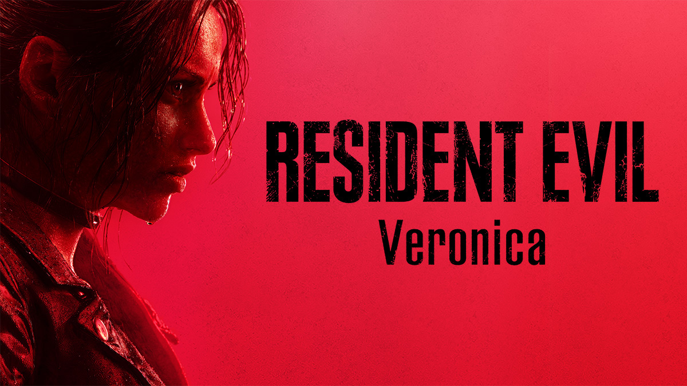

GTA VI a siete semanas: los juegos más esperados de aquí a 2027
Rockstar ya puso fecha definitiva y el resto de la industria se reorganizó a su alrededor. Este es el calendario de lo que viene.

Grand Theft Auto VI: 19 de noviembre
Después de dos retrasos, primero de 2025 al 26 de mayo de 2026 y luego a noviembre, Rockstar confirmó que Grand Theft Auto VI sale el jueves 19 de noviembre de 2026 en PS5 y Xbox Series X|S. Las reservas están abiertas desde el 25 de junio. Quien compre la versión digital podrá precargar el juego desde el 12 de noviembre.
Lo que más se nota es lo que falta: por ahora no hay versión para PC. Rockstar ya hizo lo mismo con GTA V y Red Dead Redemption 2, que llegaron a PC meses después que a consola. Todo indica que va a repetir esa estrategia.
Cuando un solo juego mueve las fechas de toda la industria, el calendario también es noticia.
El efecto GTA en el calendario
El caso más claro es Fable. Xbox retrasó el juego de Playground Games al 23 de febrero de 2027 y dio como motivo un calendario "excepcionalmente lleno", con GTA VI como principal competidor. Del otro lado, octubre de 2026 se llenó de estrenos (lo repaso aquí) porque las editoras prefirieron salir antes de noviembre.

Lo que llega en 2027
| 23 feb 2027 | Fable (Xbox, PC, PS5) — Playground Games reinicia la saga de fantasía británica. |
|---|---|
| Marzo 2027 | 007 First Light (Switch 2) — La versión de IO Interactive para la consola de Nintendo. En PS5, Xbox y PC salió el 27 de mayo de 2026. |
| 2027 | Resident Evil Veronica (PS5, Xbox, Switch 2, PC) — Capcom rehace Code: Veronica, del año 2000, con el RE Engine y cámara en tercera persona, como el remake de Resident Evil 2. Claire Redfield busca a su hermano Chris y termina presa en la isla Rockfort en pleno brote del virus T. Se anunció en el Summer Game Fest de junio; el día exacto aún no está confirmado. |
| Sin fecha | Kingdom Hearts IV y Squadron 42 — Están entre los más esperados, pero todavía no tienen fecha confirmada. |


Fechas vigentes al 2 de octubre de 2026. Pueden cambiar.